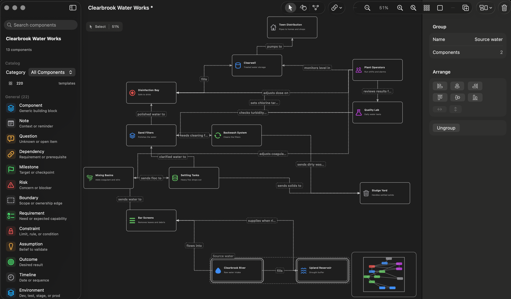
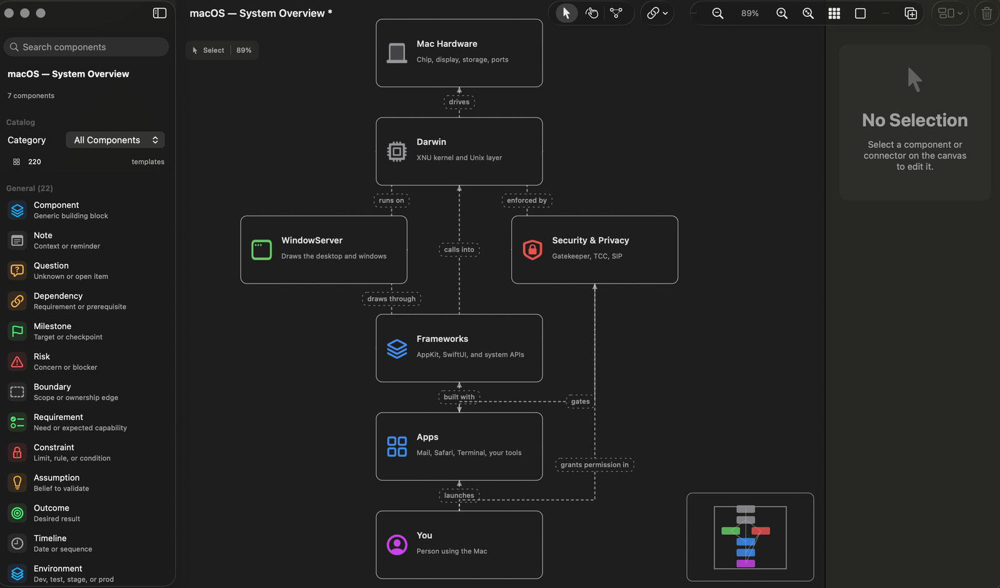
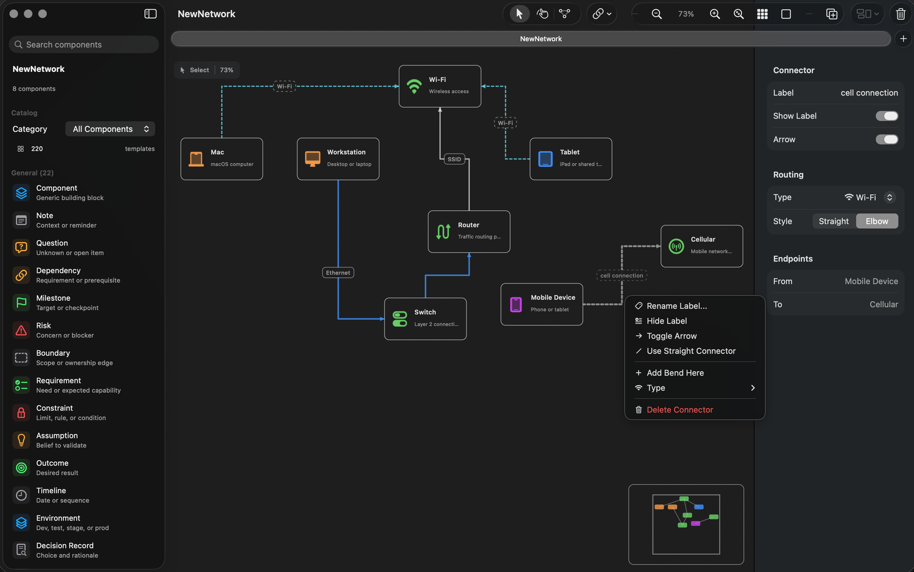

Canvas
Build system maps quickly.
Add devices, services, networks, identity elements, process blocks, data stores, and notes to a freeform board.
Open-source macOS diagramming
Local-first, InfraCanvas helps map infrastructure, networks, systems, dependencies, and connected ideas.
0.2.1 improves undo/redo and Save As, and routes elbow connectors more cleanly in dense diagrams.
InfraCanvas is built for people who need to reason through systems: platform workflows, network diagrams, cloud services, identity paths, dependencies, handoffs, and the operational details that are easier to understand when the pieces are visible.




Canvas
Add devices, services, networks, identity elements, process blocks, data stores, and notes to a freeform board.
Connectors
Use straight or elbow connectors, labels, arrows, and link types for Ethernet, Wi-Fi, VPN, fiber, power, and dependency paths.
Files
Save boards as `.infracanvas` files, then export snapshots as PNG or PDF for tickets, notes, documentation, or review.
Requirements
The downloadable DMG is signed with an Apple Developer ID certificate and notarized by Apple. That means macOS can verify the release before opening it, while the source remains available for review on GitHub.
Open source
The source code, release notes, wiki documentation, roadmap, and license are available on GitHub. InfraCanvas is provided “AS IS”, without warranty.